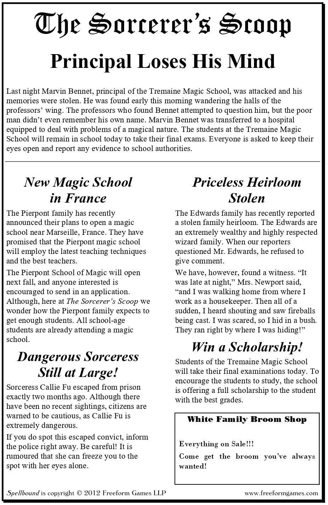

Welcome to the Tremaine School of Magic, which is located within an ancient British castle. The castle is built at the top of a cliff and is miles from the nearest town or city. Students and Professors live in the castle during the school year, but today is the last day of school before summer break.
Last night, someone painted a red X on the Headmaster’s door. This morning Professor Bennet, the Headmaster, woke up unable to remember anything. Not even his own name! Parents are convinced that the school is under some sort of magical attack, and the professors have announced that if the culprit is not caught, the school will close and will not reopen next year. Professor Riley Karlsen, the most senior teacher, is overseeing investigations. No-one may leave the school grounds before the end of the school day. Anyone caught doing so will be presumed guilty and detained for questioning.
Even with all of that going on, today is still the dreaded day of finals. Each professor will give an exam and grade the students’ performance, and a full scholarship will be awarded to the student with the highest grades. Let’s hope the students’ memories are working better than the unfortunate Professor Bennet’s!
